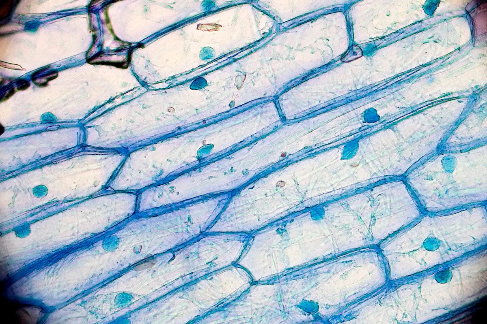
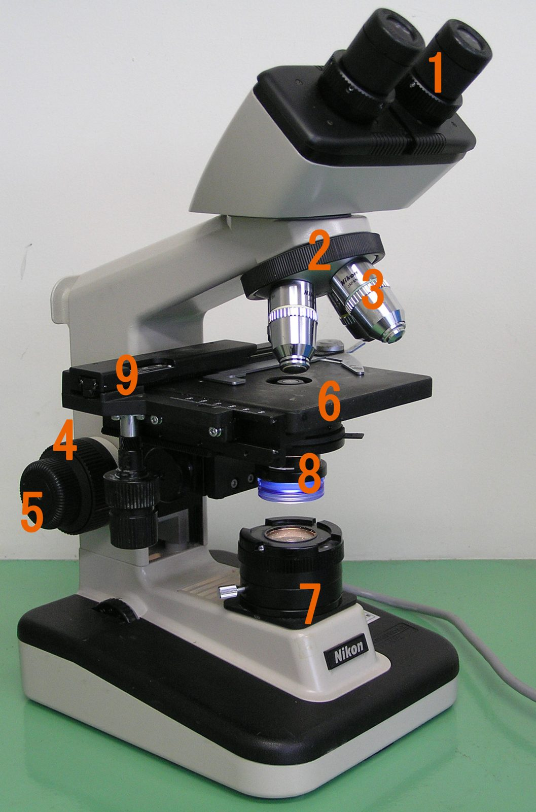
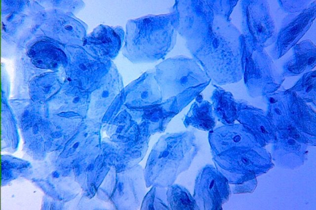

Year 9 Science · Lesson 11 · Practical
Where is the DNA?
Cells and the nucleus
Stained onion cells. kaibara87. CC BY 2.0

Remember Lesson 2?
Cells with a nucleus, cells without
In plant, animal and fungal cells the DNA is kept in the nucleus. In bacteria and archaea it floats loose in the cytoplasm.
Today you will see a nucleus for yourself, in your own cells.
The light microscope
Know your microscope


- Eyepiece lens
- Turret that holds the objective lenses
- Objective lenses
- Coarse focus knob
- Fine focus knob
- Stage, where the slide sits
- Light source
- Condenser and diaphragm
- Stage controls
Using it well
Magnification and the golden rules
Total magnification = eyepiece × objective. For example 10× × 40× = 400×.
- Carry the microscope with two hands: one on the arm, one under the base.
- Always start on the lowest magnification.
- Use the coarse focus only on low power. On high power, use the fine focus.
Why start low? (p22 Q3) You see a wider area, so the cells are easier to find. The image is brighter. And the lens is far from the slide, so you won't crash into it.
Lab manual p21
Method: cheek cells
- Gently rub the inside of your cheek with a clean cotton bud or toothpick.
- Smear it across the centre of a clean slide.
- Add one drop of methylene blue stain.
- Lower a cover slip at an angle to avoid air bubbles. Blot the edges.
- Focus on low power first, then move to higher power.
Safety · Lab manual p23
Before you start
- Cheek cells: use only your own swab or toothpick. Throw it away straight after use.
- Take care when cutting the onion.
- Iodine and methylene blue stain skin and clothes. Wear safety glasses and wipe up spills.
- Carry microscopes with two hands.
Lab manual p22
Cheek cells, stained with methylene blue


Draw 3 to 5 cells. Label:
- Cell membrane: the thin outer edge
- Cytoplasm: the jelly filling the cell
- Nucleus: the dark spot, which holds the DNA
Q2: what can't you see? Mitochondria are too small for a school microscope. Animal cells have no cell wall or chloroplasts to see.
Lab manual p23
Method: onion cells
- Cut a small piece of onion. With forceps, peel the very thin, see-through skin from the inside of one layer.
- Lay it flat on a clean slide, without folds or wrinkles.
- Add one drop of iodine solution to stain the cells.
- Lower a cover slip at an angle. Blot the edges.
- Focus on the lowest magnification first, then move higher.
Lab manual p23
Onion cells
Draw 3 to 5 cells. Label:
- Cell wall: the thick, box-like outline
- Cell membrane: just inside the wall
- Cytoplasm
- Nucleus
No chloroplasts: the onion bulb grows underground, out of the light. This sample was stained blue; with iodine yours will look yellow-brown.
Lab manual p24
Compare the two cells
| Structure | Cheek cell | Onion cell |
|---|---|---|
| Cell membrane | ✓ | ✓ |
| Cytoplasm | ✓ | ✓ |
| Nucleus | ✓ | ✓ |
| Cell wall | ✗ | ✓ |
| Shape | Flat, irregular | Regular, brick-like |
The big idea
Different organisms, same place for DNA
In both a human cell and an onion cell, the DNA is in the nucleus.
You and an onion are very different. But you store your instructions in the same way, in the same kind of molecule. That's one clue that we are related.
Extension: mitochondria also hold a small amount of their own DNA.
Exit question
Where is the DNA in a cheek cell and an onion cell?
Then name one structure an onion cell has that a cheek cell doesn't.
Joseph Elsbernd. CC BY-SA 2.0
Away today?
Missed this lesson? Catch up here
- Learn the microscope parts on slide 3, and how to work out total magnification.
- Lab manual p22: draw and label 3 to 5 cheek cells from the photo on slide 7. Answer Q1 to Q3.
- Lab manual p23 to p24: draw and label onion cells from the photo on slide 9. Answer Q1 to Q3.
- Exit question: where is the DNA in both cells?